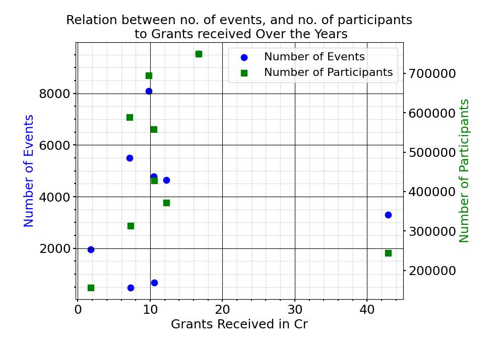
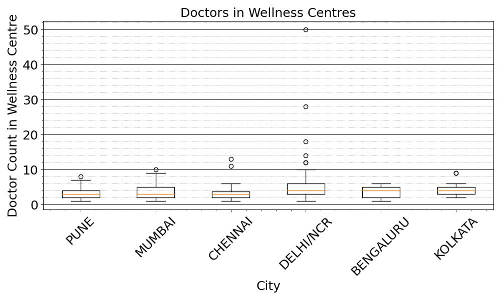

Data Analysis and Visualization
The data is obtained from the Open Government Data Platform.
Year-wise Budget Allocation for the Department of Sports (2012-13 to 2021-22)
We see that there has been an increase in the budget allocated for the Department of Sports, except for the year of COVID. The revised estimates have been on par with the actual expenditure.

Neighbourhood Youth Parliament Component under NYLP (2014-2023)
We see that there is no relation between the grants received, the number of events organized, and the number of participants.

City-wise List of Wellness Centres
Most wellness centers across cities have doctors in single digits, and only a few outliers have over 10 doctors.
